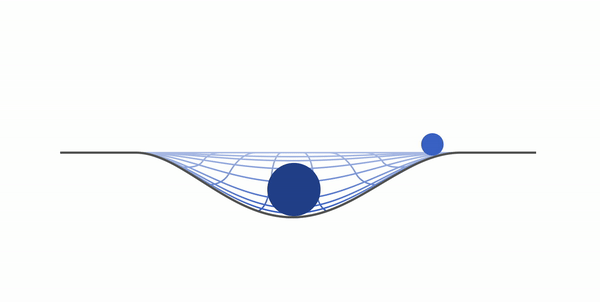

Закон всемирного тяготения
Гравитационное взаимодействие
Земля — это большой магнит. Причем на самом деле магнит, с настоящим магнитным полем. Но сейчас речь пойдет о другом явлении, которое притягивает к Земле тела — от прыгающего с дерева котика до летящего мимо астероида. Называется это явление гравитацией. Земля — это большой магнит. Причем на самом деле магнит, с настоящим магнитным полем. Но сейчас речь пойдет о другом явлении, которое притягивает к Земле тела — от прыгающего с дерева котика до летящего мимо астероида. Называется это явление гравитацией.
Возьмем два тела — одно с большой массой, другое с маленькой. Натянем гигантское полотно ткани и положим на него тело с большей массой. После чего положим туда тело с массой поменьше. Мы будем наблюдать примерно такую картину:
Маленькое тело начнет притягиваться к тому, что больше, — это и есть гравитация. По сути, Земля — это большой шарик, а все остальные предметы — маленький (даже если это вовсе не шарики).
Гравитационное взаимодействие универсально. Оно справедливо для всех видов материи. Гравитация проявляется только в притяжении — отталкивание тел гравитация не предусматривает.
Из всех фундаментальных взаимодействий гравитационное — самое слабое. Хотя гравитация действует между всеми элементарными частицами, она настолько слаба, что ее принято не учитывать. Все дело в том, что гравитационное взаимодействие зависит от массы объекта, а у частиц она крайне мала. Эту зависимость впервые сформулировал Исаак Ньютон.
Закон всемирного тяготения
В 1682 году Исаак Ньютон открыл закон всемирного тяготения. Он звучит так: все тела притягиваются друг к другу, сила всемирного тяготения прямо пропорциональна произведению масс тел и обратно пропорциональна квадрату расстояния между ними.
Формула силы тяготения согласно этому закону выглядит так:
Закон всемирного тяготения
F = G * (Mm/R2)
F — сила тяготения [Н]
M — масса первого тела (часто планеты) [кг]
m — масса второго тела [кг]
R — расстояние между телами [м]
G — гравитационная постоянная
G = 6,67 × 10-11м3·кг-1·с-2
Когда мы встаем на весы, стрелка отклоняется. Это происходит потому, что масса Земли очень большая, и сила тяготения буквально придавливает нас к поверхности. На более легкой Луне человек весит меньше в шесть раз.
Закон всемирного тяготения используют, чтобы вычислить силы взаимодействия между телами любой формы, если размеры тел значительно меньше расстояния между ними.
Если мы возьмем два шара, то для них можно использовать этот закон вне зависимости от расстояния между ними. За расстояние R между телами в этом случае принимается расстояние между центрами шаров.
Ускорение свободного падения
Чтобы математически верно и красиво прийти к ускорению свободного падения, нам необходимо сначала ввести понятие силы тяжести. Сила тяжести — сила, с которой Земля притягивает все тела.
На первый взгляд сила тяжести очень похожа на вес тела. Действительно, в состоянии покоя на поверхности Земли формулы силы тяжести и веса идентичны. Вес тела в состоянии покоя численно равен массе тела, умноженной на ускорение свободного падения, разница состоит лишь в точке приложения силы.
Сила тяжести — это сила, с которой Земля действует на тело, а вес — сила, с которой тело действует на опору. Это значит, что у них будут разные точки приложения: у силы тяжести к центру масс тела, а у веса — к опоре.
Сила тяжести
F = mg
F — сила тяжести [Н]
m — масса тела [кг]
g — ускорение свободного падения [м/с2]
На Земле g = 9,8 м/с2
Также важно понимать, что сила тяжести зависит исключительно от массы и планеты, на которой тело находится. А вес зависит еще и от ускорения, с которым движется тело или опора. Например, в лифте вес зависит от того, куда и с каким ускорением двигаются его пассажиры. А силе тяжести все равно, куда и что движется — она не зависит от внешних факторов.
На второй взгляд сила тяжести очень похожа на силу тяготения. В обоих случаях мы имеем дело с притяжением — значит, можем сказать, что это одно и то же. Практически. Мы можем сказать, что это одно и то же, если речь идет о Земле и каком-то предмете, который к этой планете притягивается. Тогда мы можем даже приравнять эти силы и выразить формулу для ускорения свободного падения:
Закон всемирного тяготения
g = G * (M/R2)
g — ускорение свободного падения [м/с2]
G — гравитационная постоянная
M — масса планеты [кг]
R — расстояние между телами [м]
G = 6,67 × 10-11м3·кг-1·с-2
Ускорение свободного падения характеризует то, как быстро увеличивается скорость тела при свободном падении.
Свободное падение — это ускоренное движение тела в безвоздушном пространстве, при котором на тело действует только сила тяжести.
Третий закон Ньютона
Третий закон Ньютона обобщает огромное количество опытов, которые показывают, что силы — результат взаимодействия тел. Он звучит так: тела действуют друг на друга с силами, равными по модулю и противоположными по направлению. Если попроще — сила действия равна силе противодействия.
Третий закон Ньютона
F1 = -F2
F1 — сила, с которой первое тело действует на второе [Н]
F2 — сила, с которой второе тело действует на первое [Н]